Part 1.1: Convolutions from scratch
A 2D convolution slides a flipped kernel over the image and sums the products. I pad the image with zeros so the output has the same size as the input ("same" mode). The kernel is flipped in both directions first, which is the only difference from correlation. For a kernel of height kh I put kh//2 rows of zeros on top and kh-1-kh//2 rows at the bottom; this matches how scipy.signal.convolve2d centers the output, also for even sized kernels like Dx.
First version, four for loops (two over the output pixels, two over the kernel):
def conv_4loops(im, k):
H,W=im.shape
kh,kw=k.shape
ph=kh//2
pw=kw//2
kf=k[::-1,::-1] # flip the kernel (this is what makes it a convolution)
# zero padding, output is "same" size
padded=np.zeros((H+kh-1, W+kw-1))
padded[ph:ph+H, pw:pw+W]=im
out=np.zeros((H,W))
for i in range(H):
for j in range(W):
s=0.0
for u in range(kh):
for v in range(kw):
s=s+padded[i+u, j+v]*kf[u,v]
out[i,j]=s
return out
Two loops: the two inner loops are replaced by one numpy multiply and sum over the patch.
def conv_2loops(im, k):
H,W=im.shape
kh,kw=k.shape
ph=kh//2
pw=kw//2
kf=k[::-1,::-1]
padded=np.zeros((H+kh-1, W+kw-1))
padded[ph:ph+H, pw:pw+W]=im
out=np.zeros((H,W))
for i in range(H):
for j in range(W):
# the inner two loops become one numpy multiply + sum
out[i,j]=np.sum(padded[i:i+kh, j:j+kw]*kf)
return out
The other way to get two loops is to loop over the kernel entries and shift the whole padded image. This one is much faster because every numpy operation works on the full image instead of on a 9x9 patch.
def conv_2loops_kernel(im, k):
H,W=im.shape
kh,kw=k.shape
ph=kh//2
pw=kw//2
kf=k[::-1,::-1]
padded=np.zeros((H+kh-1, W+kw-1))
padded[ph:ph+H, pw:pw+W]=im
out=np.zeros((H,W))
for u in range(kh):
for v in range(kw):
out=out+kf[u,v]*padded[u:u+H, v:v+W]
return out
I ran all versions on a 320x400 grayscale picture of myself and compared them with scipy.signal.convolve2d(im, k, mode='same', boundary='fill', fillvalue=0). The results are identical (max difference around 2e-15 for the box filter, exactly 0 for Dx and Dy). Runtimes on my laptop:
| Kernel | 4 loops | 2 loops (pixels) | 2 loops (kernel) | scipy convolve2d | max |diff| vs scipy |
|---|---|---|---|---|---|
| 9x9 box | 1.96 s | 0.28 s | 0.0075 s | 0.011 s | 1.9e-15 |
| Dx = [1, -1] | 0.086 s | 0.28 s | 0.0004 s | 0.0008 s | 0 |
| Dy = [1, -1]T | 0.099 s | 0.29 s | 0.0003 s | 0.0010 s | 0 |
The four loop version is pure Python so it is about 200 times slower than scipy for the 9x9 box. The pixel based two loop version is not much better for tiny kernels because it still calls numpy 128,000 times; the overhead of a call dominates. The kernel based version only does 81 (or 2) big numpy operations and is as fast as scipy here. scipy is written in C and handles every case, and for large kernels it can switch to an FFT based method, which none of my versions do.
Boundaries. My code and scipy with boundary='fill' both pretend the world outside the image is black. With the box filter this makes a dark frame around the picture, because near the border the average includes zeros. scipy also offers boundary='symm' (mirror the image), which removes the frame; the difference between the two is up to 0.50 in intensity on the border pixels and zero further than 4 pixels inside. For the derivative filters the zero padding produces a fake strong edge along the image border, which is why in Part 1.2 and 1.3 I use symmetric padding.


Dx responds to vertical edges (glasses frame sides, hair strands), Dy to horizontal ones (the top of the glasses, eyebrows, the collar).
Part 1.2: Finite difference operator
I convolve the cameraman image (converted to float in [0, 1]) with Dx = [1, -1] and Dy = [1, -1]T to get the partial derivatives. The gradient magnitude is computed per pixel as
It is large wherever the intensity changes quickly in any direction. To get an edge image I keep the pixels where the magnitude is above a threshold.


Threshold search. The intensities are in [0, 1], so a threshold of 0.25 means a jump of a quarter of the full range between two neighbouring pixels.


I picked 0.25. Below 0.2 the grass in the lower part of the picture turns into a field of white dots, because the grass texture has small but sharp intensity jumps and the 2-pixel difference filter reacts to every one of them. At 0.3 the noise is gone but the buildings on the right and the far tripod leg start to disappear. 0.25 keeps the coat outline, the camera, all three tripod legs and most of the skyline while only a few grass speckles remain. It is a trade-off: any threshold that removes every grass dot also removes the weak but real edges of the buildings.
Part 1.3: Derivative of Gaussian filter
The plain difference filter is noisy because it looks at only two pixels. Smoothing first helps. I build a 2D Gaussian with cv2.getGaussianKernel(11, 1.5) and the outer product g @ g.T (sigma = 1.5, 11x11 kernel), blur the cameraman with it and then repeat Part 1.2.


What is different? Two things. The gradient values are much smaller, because blurring spreads a sharp step over several pixels, so the difference between neighbours drops; the useful threshold moved from 0.25 down to 0.06. And the edges are thicker and smoother: the coat, the tripod and the buildings come out as continuous lines instead of broken dashes, while the grass texture, which is high frequency, is almost completely removed by the blur before the derivative ever sees it. So with the Gaussian I get an edge map with less noise and fewer missing edges at the same time, which was not possible with the difference filter alone.
Single convolution: derivative of Gaussian
Convolution is associative, so (I * G) * Dx = I * (G * Dx). I convolve the Gaussian with Dx and Dy once and get two small DoG filters, then only one convolution with the image is needed per direction.
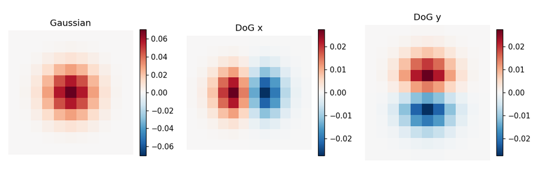


Verification: the maximum absolute difference between the gradient magnitude from "blur then differentiate" and from the DoG filters is 1.1e-15, i.e. floating point noise, and the binarized edge maps are pixel for pixel identical for every threshold I tried. (When I first used zero padding for both steps they only agreed inside the image and differed on the border, because padding twice with zeros is not the same as padding once with the wider filter. With symmetric padding this goes away.)
Part 2.1: Image sharpening (unsharp masking)
A Gaussian blur keeps the low frequencies of an image. Subtracting the blurred image from the original therefore leaves only the high frequencies: edges, texture, fine detail. An image looks sharper when those high frequencies are stronger, so I add some amount α of them back:
The last form shows it is a single convolution with the "unsharp mask" kernel: an impulse scaled by 1+α minus α times the Gaussian. I implemented both the two step version and the single kernel and they give the same image (max difference 6e-14).
def unsharp(im, sigma, alpha):
blur=gauss_blur(im, sigma)
high=im-blur
sharp=im+alpha*high
return np.clip(sharp,0,1), blur, high
def unsharp_kernel(sigma, alpha):
# (1+a)*delta - a*G , one single filter
G=gauss_kernel(sigma)
n=G.shape[0]
delta=np.zeros_like(G)
delta[n//2, n//2]=1
return (1+alpha)*delta - alpha*G
Taj Mahal, σ = 1.5


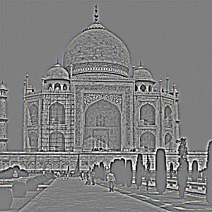


With α = 0.5 or 1 the marble carvings and the small figures in front become crisper and the picture just looks like a better photo. At α = 2 the contrast of edges is exaggerated and bright halos start to appear around the dark trees against the sky. At α = 4 the image is clearly over-processed: the sky gets grainy because the JPEG noise is high frequency too and gets amplified together with the real detail, and the dome looks like it has an outline drawn around it. Unsharp masking cannot add information, it only makes existing edges more contrasty, so the "right" α depends on how much noise is in the picture.
My own pictures, σ = 2


The portrait gains a lot at α = 1: hair strands and the glasses frame separate from the skin. At α = 4 skin texture and noise become visible and the picture looks harsh. On the building the columns and window frames pop out but the flat gray sky stays flat, because it has no high frequencies to amplify.
Evaluation: blur a sharp image, then sharpen it again
I took a sharp lion photo, blurred it with σ = 2 and then applied unsharp masking with the same σ and several α. As a rough sharpness number I use the mean gradient magnitude, and I also compute the mean squared error to the original.


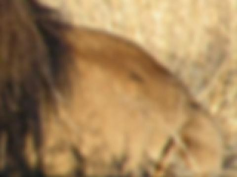
| Image | Mean gradient magnitude | MSE to original |
|---|---|---|
| original | 0.0678 | 0 |
| blurred σ = 2 | 0.0157 | 0.00359 |
| sharpened α = 1 | 0.0202 | 0.00298 |
| sharpened α = 2 | 0.0252 | 0.00271 |
| sharpened α = 3 | 0.0303 | 0.00276 |
| sharpened α = 5 | 0.0408 | 0.00381 |
Observations: sharpening does make the blurred lion look better and brings the MSE down a bit (best around α = 2), but even at α = 5 the gradient measure is far below the original's 0.0678 and the MSE goes back up. The crops show why: the fine hairs of the mane were averaged away by the blur and are simply not in the image anymore. Unsharp masking only boosts whatever high frequencies survived the blur, so the edges that are still there get stronger (and eventually get halos), but the lost texture never comes back. Sharpening is not the inverse of blurring.
Part 2.2: Hybrid images
A hybrid image is the low frequencies of one picture plus the high frequencies of another. Up close the high frequencies dominate and you see the first picture; from far away (or when the image is small) only the low frequencies survive and the second picture appears. For the low pass I use a Gaussian with std σlow; for the high pass I subtract a Gaussian blur with std σhigh from the image. All hybrids here are grayscale.
def hybrid_image(im1, im2, sigma1, sigma2):
# im1 -> high frequencies (see it up close), im2 -> low frequencies (see it far away)
high=im1-gauss_blur(im1, sigma1)
low=gauss_blur(im2, sigma2)
return np.clip(low+high,0,1), low, high
Alignment: I used the alignment code from the starter, but instead of clicking I pass the two eye positions of each image by hand. The code recenters both images on the midpoint of the eyes, rescales so the eye distances match, rotates one image so the eye lines are parallel and crops both to the same size. I made two small changes: I rotate the low frequency image instead of the first one (a rotated blurry image looks fine, a rotated sharp one has visible black corners), and I track which pixels are padding and crop the black borders away afterwards.
Derek and Nutmeg, full process


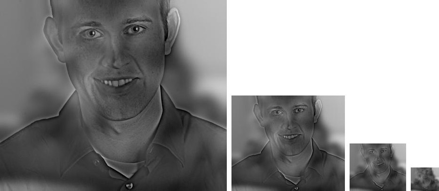
Log magnitude of the 2D Fourier transform, np.log(np.abs(np.fft.fftshift(np.fft.fft2(img)))), for each step:


In the spectra the low pass keeps only a small bright blob in the middle (the vertical and horizontal streaks come from the image borders). The high pass has a dark hole in the middle and keeps everything else, including the diagonal lines from the slanted edges of the rotated cat picture. The hybrid spectrum is literally the two pasted together.
Cutoff frequencies. A Gaussian with std σ pixels attenuates a frequency f (cycles/pixel) by exp(−2π²σ²f²); it drops to one half at f ≈ 0.19/σ. So σlow = 10 keeps details coarser than roughly 50 pixels per cycle, and σhigh = 4 keeps details finer than roughly 20 pixels per cycle, on the 482x406 aligned image. I tried a grid of values:

With σlow = 5 the cat is still sharp enough to fight with Derek at close range and the result looks like a double exposure. With σlow = 20 the cat becomes a shapeless cloud that never really reads as a cat, even from far away. σhigh = 2 leaves too little of Derek (just thin outlines), σhigh = 8 keeps so much of his low frequencies that his face stays visible at every distance. σhigh = 4, σlow = 10 gave the cleanest switch, and it makes sense that σlow should be clearly larger than σhigh so that the two images do not share a frequency band.
Me, close and far (change of expression and perspective)
The two portraits are from Project 0: one taken very close with a wide angle lens (slight smile, big nose), one from far away with zoom (neutral face). Up close you see the wide angle smiling version, from a distance the flatter telephoto face. σhigh = 3, σlow = 8.
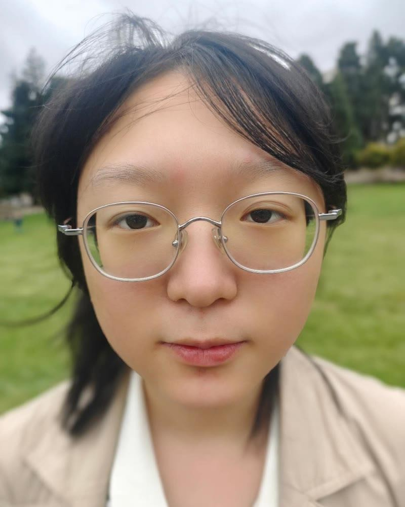
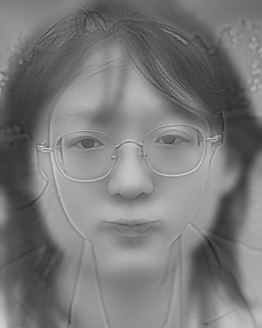
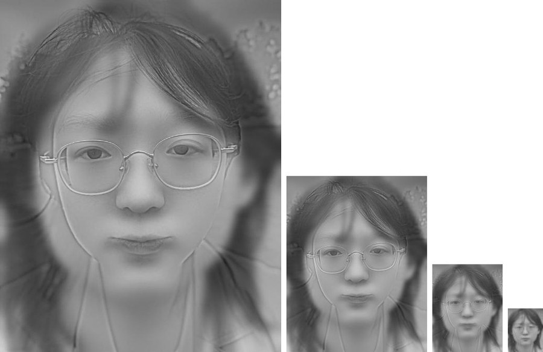
This works but the effect is subtle since both pictures are the same person with the same glasses; the clearest change is the mouth and the face shape.
House cat and lion
Cat up close, lion from far away, aligned on the eyes. σhigh = 4, σlow = 6 on a 815x726 image. The lion needed a smaller σlow than Derek's cat because its face is small in the frame; with σlow = 9 the mane and the grass merged into one blob.


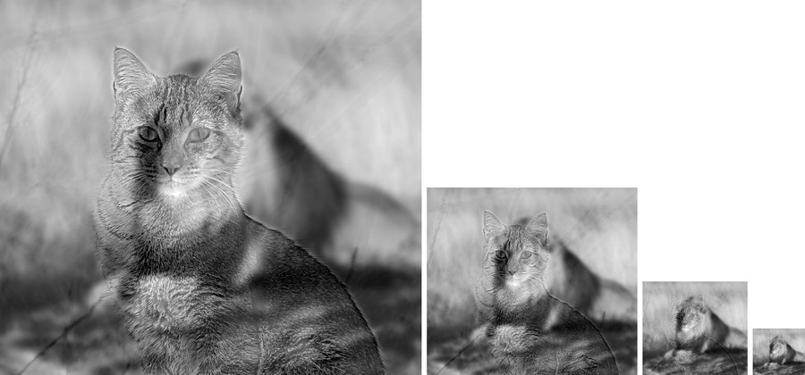
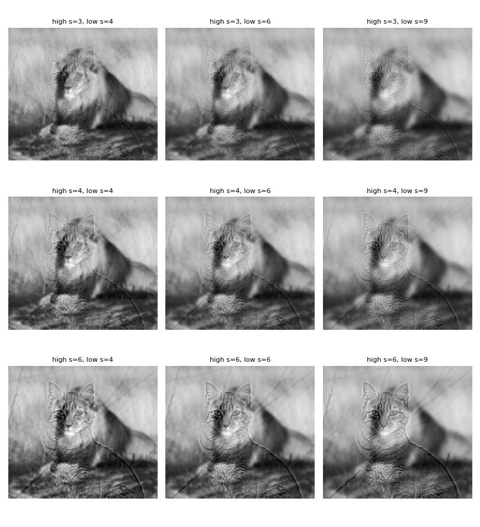
Failure: Doe Library, close and far
I tried the same trick with the two Doe Library pictures from Project 0 (wide angle from close, telephoto from far), aligning them on the two ends of the roof line.


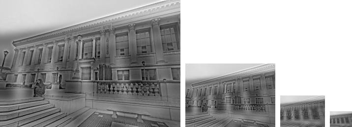
This does not work. Both pictures consist almost only of straight edges and repeated windows, so the "low frequency" building is really just a blurred set of lines that never groups into a recognisable object of its own; at every distance you only see the sharp building plus some smearing. Also, because the perspective is different, the two sets of lines cannot be aligned by a similarity transform, so the columns of the far image lie diagonally across the columns of the close one. Hybrid images need two images that look alike in their coarse structure (two faces, two animals) and the low frequency one should have big smooth regions that survive blurring.
Part 2.3: Gaussian and Laplacian stacks
A stack is like a pyramid without downsampling: every level has the full image size. Level 0 of the Gaussian stack is the image; each next level is the previous one blurred with a Gaussian whose σ doubles (2, 4, 8, 16, 32), so the levels lose detail at the same rate as a pyramid that halves the resolution. The Laplacian stack is the difference of neighbouring Gaussian levels; the last Laplacian level is just the last (blurriest) Gaussian level, so that adding all Laplacian levels gives back the original image exactly (I checked: max reconstruction error 1e-16).
def gauss_stack(im, levels, sigma=2):
stack=[im]
for i in range(1, levels):
# blur the previous level, sigma doubles each time so it acts like a pyramid
stack.append(gauss_blur(stack[-1], sigma*2**(i-1)))
return stack
def lap_stack(im, levels, sigma=2):
g=gauss_stack(im, levels, sigma)
lap=[]
for i in range(levels-1):
lap.append(g[i]-g[i+1])
lap.append(g[-1]) # last one is just the blurry image so we can add everything back
return lap, g
Gaussian stack of the apple and the orange (levels 0 to 5):


Laplacian stack (levels 0 to 4 are stretched to full contrast for display since the values are small and centered at 0; level 5 is the plain residual):


The fine levels contain the orange peel texture and the sharp outline, the middle levels the highlights and the shading, and the last level is only the overall colour. Recreation of Figure 3.42 from Szeliski (levels 0, 2, 4 and the sum): left column is the apple's Laplacian level times the (blurred) mask, middle column the orange's level times one minus the mask, right column their sum. The bottom row adds all levels up.

Part 2.4: Multiresolution blending
To blend image A and image B with a mask M (1 where A should show) I build the Laplacian stacks LA, LB and a Gaussian stack GM of the mask, blend each level separately and add the levels up:
The mask gets blurrier at every level, so the fine details are cut with a sharp seam (which is fine, a sharp cut between two textures looks natural) while the coarse colour and shading are mixed over a wide band, which hides the seam. I use 6 levels and σ = 2 (doubling) for all stacks, on colour images channel by channel.
def blend(im1, im2, mask, levels=6, sigma=2):
# im1 where mask==1, im2 where mask==0
L1,_=lap_stack(im1, levels, sigma)
L2,_=lap_stack(im2, levels, sigma)
GM=gauss_stack(mask, levels, sigma)
out=np.zeros_like(im1)
for i in range(levels):
m=GM[i]
if im1.ndim==3:
m=m[:,:,None]
out=out+m*L1[i]+(1-m)*L2[i]
return np.clip(out,0,1)
The oraple (vertical seam)


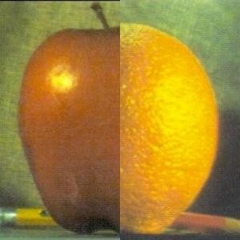

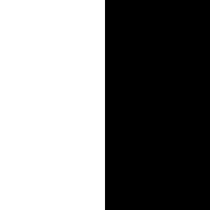
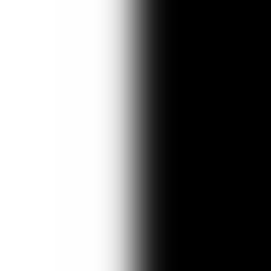
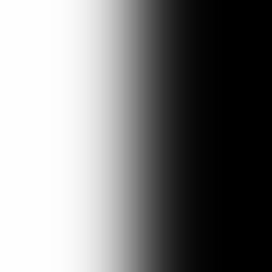
Other settings, to see what the parameters do:
With too few levels the coarsest level still has a fairly sharp mask, so the big colour difference between red and orange is cut abruptly. Increasing σ widens the band at every level; at σ = 4 the colours mix over almost the whole fruit, which looks smooth but the apple half starts looking orange.
Liger (vertical seam, aligned on the eyes)


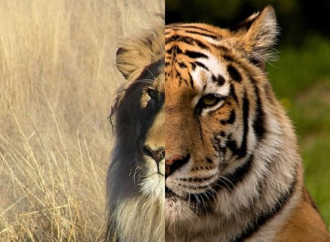

The mane and the stripes meet in the middle of the face. The stripes stop with a sharp cut at fine scales, which looks like fur, while the yellow and orange background colours fade into each other over a wide band.
Moon over Doe Library (round mask)
I pasted a scaled full moon into a copy of the Doe Library photo (only the moon disc, so that the black sky of the moon photo is not part of the input) and used a circle slightly smaller than the disc as the mask.
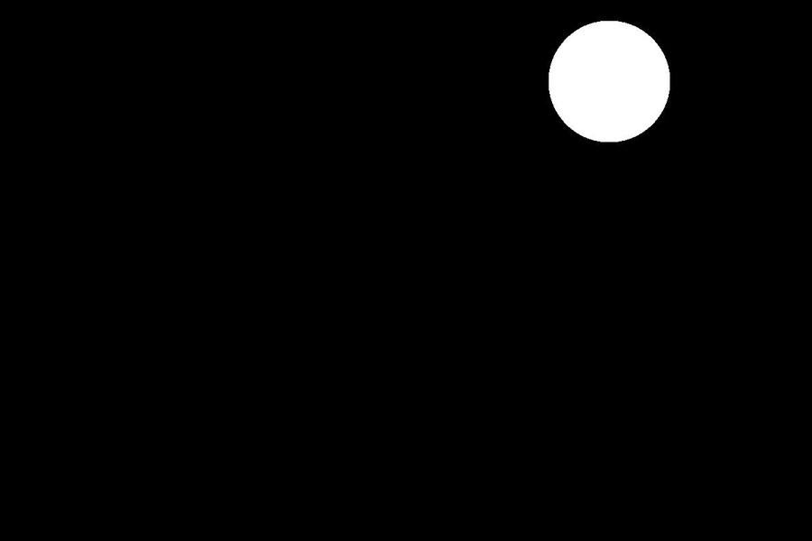
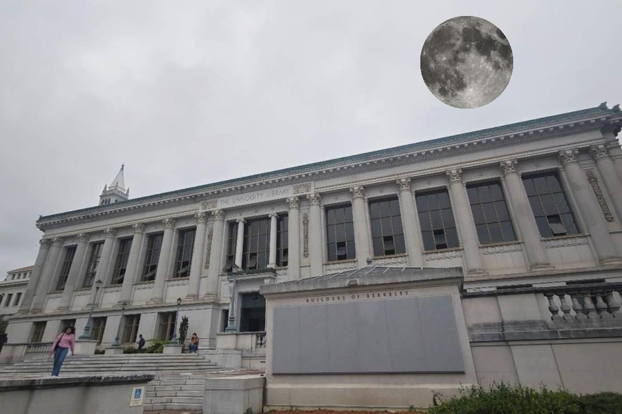
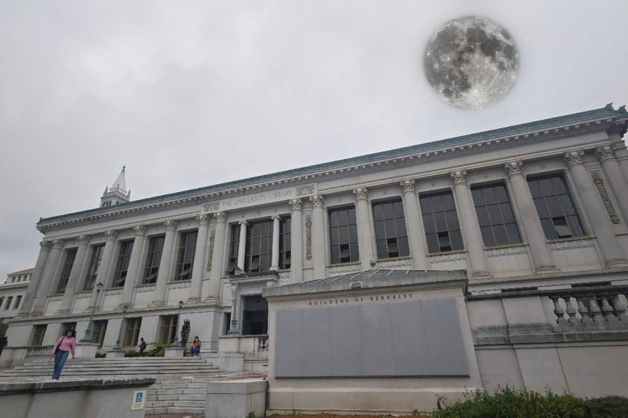
Cat on my face (ellipse mask), my favourite
The cat picture is aligned on my eyes with the same alignment code as in Part 2.2, then an ellipse around the cat's head is the mask.
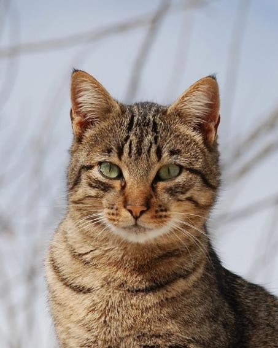
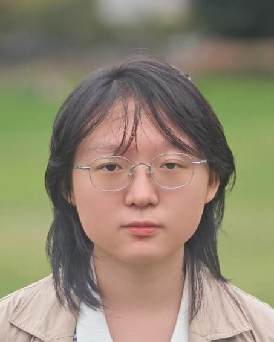
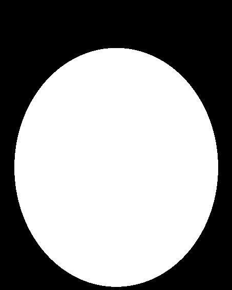
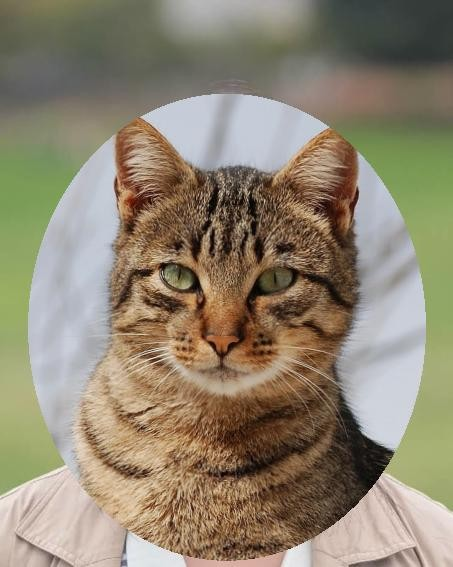
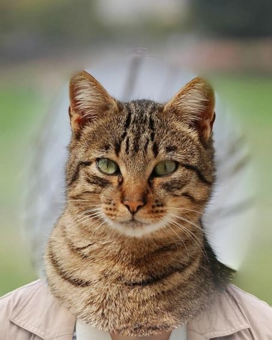
The Laplacian stack of this blend, like Figure 10 in Burt and Adelson: the masked cat levels, the masked me levels, and the blended levels for levels 0, 2, 4, and the sums at the bottom.
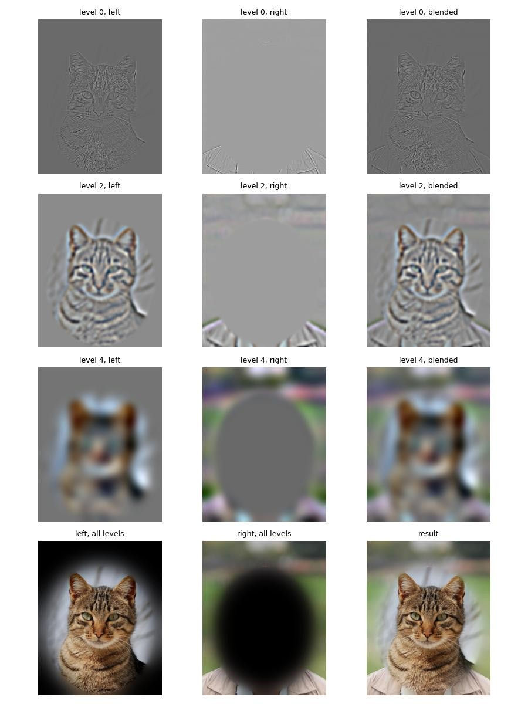
What I like here is that at the fine levels (top row) the cat's fur ends exactly at the ellipse and my hair starts, while at level 4 the green background and the grayish sky behind the cat are mixed over a band the size of the whole head, so there is no visible edge in the colour. The hard cut version shows the pale blue of the cat photo as a sharp halo around the head; in the blend it just becomes a soft lighter region that looks like it could be lighting.
The most important thing I learned
That "blur" and "detail" are literally the same thing seen from two sides. A Gaussian keeps the low frequencies; the original minus the blur is the high frequencies; and once you can split an image like that you can do surprisingly different things with the same two lines of code: add the detail back to sharpen, swap the detail of one picture into the blur of another to make a hybrid, or split into many bands and choose per band how wide the seam should be to blend two images. The second lesson was more practical: most of the time went into thresholds, sigmas and alignment, not into the filters themselves, and the right numbers depend on the image size and content.
Image credits: cameraman, Taj Mahal, apple/orange, Derek and Nutmeg from the course. Portrait and Doe Library photos are my own from Project 0. Lion by Kevin Pluck (CC BY 2.0), cat by Alvesgaspar (CC BY-SA 3.0), full moon by Luc Viatour (CC BY-SA 3.0), tiger from Wikimedia Commons (CC BY-SA 2.5).